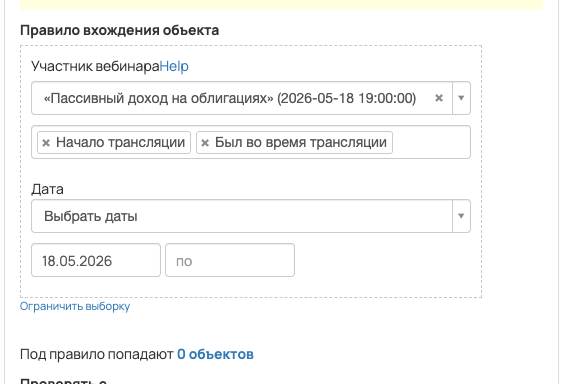
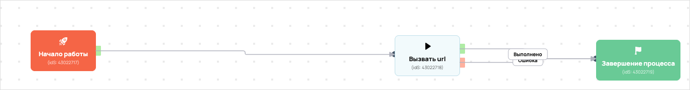

[AMO] [ED] Чекин_ПДО_Авто | Чекин_запускПДО | 101088
- ID процесса:
2469718 - Объект: Пользователи
- Статус: Ожидание событий
- Внутренняя страница: 2469718. [AMO] [ED] Чекин_ПДО_Авто | Чекин_запускПДО | 101088
- GetCourse: Карточка | Схема процесса
Скриншоты процесса


Коротко для заказчика
- Главное: В процесс попадают пользователи по правилу: В группе (ID: 4797775) или В группе (ID: 4817750).
- Дальше он передает данные как: Формы и анкеты.
- Связанных баз Vakas: 1.
Понятное описание процесса
- Процесс работает с объектом GetCourse: Пользователи. Текущий статус процесса: Ожидание событий.
- На вход попадают данные так: В процесс попадают пользователи по правилу: В группе (ID: 4797775) или В группе (ID: 4817750).
- Внутри схемы есть дополнительные проверки/ожидания: 3. Основные блоки: «Условие»; «Условие (копия)».
- Дальше процесс делает прямые вызовы Vakas: 2. Напрямую задействованы базы: 101088.
- Передача: 101088. База 101088: Формы и анкеты. Передаются параметры:
name,email,phone,getcourse_user_id,utm_source,utm_medium,utm_campaign,utm_content,utm_term,commentsи другие. - Передача: 101088. База 101088: Формы и анкеты. Передаются параметры:
name,email,phone,getcourse_user_id,utm_source,utm_medium,utm_campaign,utm_content,utm_term,commentsи другие. - Что происходит в amoCRM: На входе в этап ПДО -> Чекин [85906974] база ищет дубль и при необходимости переводит найденную сделку в рабочий этап.
Ход процесса в GetCourse
- Схема состоит из 8 блоков и 10 переходов.
- По типам: стартов 1, условий/ожиданий 3, вызовов URL 2, изменений полей 0, финалов 1.
Блоки процесса: что делают и зачем нужны:
- Блок
43022717«Начало работы» (старт). Что делает: Запускает выполнение схемы для объекта, который попал под правило входа процесса. Зачем нужен: Нужен как точка входа: от него GetCourse начинает движение объекта по схеме. Дальше: если результат «Выполнено», идет в «Условие». - Блок
43162445«Условие» (условие). Что делает: Проверяет условие: В группе (ID: 4797775) и НЕ В группе (ID: 4817750). Зачем нужен: Нужен, чтобы разделить поток: подходящих пользователей/заказы отправить дальше, неподходящих перевести на другую ветку или завершить. Дальше: если результат «Нет», идет в «Условие (копия)»; если результат «Да», идет в «Вызвать url». - Блок
43022718«Вызвать url» (вызов URL). Что делает: Передает в Vakas: 101088. База 101088, канал «Формы и анкеты» (POST); параметры:name,email,phone,getcourse_user_id,utm_source,utm_medium,utm_campaign,utm_content,utm_term,comments,tag; timeout 10 сек. Зачем нужен: Нужен, чтобы передать подходящий объект в 101088. База 101088; дальше На входе в этап ПДО -> Чекин [85906974] база ищет дубль и при необходимости переводит найденную сделку в рабочий этап. Дальше: если результат «Ошибка», идет в «Завершение процесса»; если результат «Выполнено», идет в «Завершение процесса». - Блок
43022719«Завершение процесса» (завершение). Что делает: Завершает ветку процесса после выполненных проверок и действий. Зачем нужен: Нужен, чтобы закрыть текущую ветку и не гонять объект по процессу повторно. Дальше переходов нет: это конечная точка ветки. - Блок
43162446«Условие (копия)» (условие). Что делает: Проверяет условие: В группе (ID: 4817750). Зачем нужен: Нужен, чтобы разделить поток: подходящих пользователей/заказы отправить дальше, неподходящих перевести на другую ветку или завершить. Дальше: если результат «Да», идет в «Задержка». - Блок
43162451«Задержка» (таймер). Что делает: Делает паузу или ждет заданное время перед следующим шагом. Зачем нужен: Нужен для задержки между проверкой и передачей, чтобы данные успели появиться или чтобы соблюсти нужный порядок обработки. Дальше: если результат «Выполнено», идет в «Условие». - Блок
43162453«Условие» (условие). Что делает: Проверяет условие: Участник вебинара. Зачем нужен: Нужен, чтобы разделить поток: подходящих пользователей/заказы отправить дальше, неподходящих перевести на другую ветку или завершить. Дальше: если результат «Да», идет в «Вызвать url (копия)». - Блок
43162450«Вызвать url (копия)» (вызов URL). Что делает: Передает в Vakas: 101088. База 101088, канал «Формы и анкеты» (POST); параметры:name,email,phone,getcourse_user_id,utm_source,utm_medium,utm_campaign,utm_content,utm_term,comments,tag; timeout 10 сек. Зачем нужен: Нужен, чтобы передать подходящий объект в 101088. База 101088; дальше На входе в этап ПДО -> Чекин [85906974] база ищет дубль и при необходимости переводит найденную сделку в рабочий этап. Дальше: если результат «Ошибка», идет в «Завершение процесса»; если результат «Выполнено», идет в «Завершение процесса».
Что именно входит в процесс
- В процесс попадают пользователи по правилу: В группе (ID: 4797775) или В группе (ID: 4817750).
Как именно настроено правило
- В amoCRM процесс ориентирован на воронки: «ПДО».
- В описании зафиксированы этапы обработки: «Чекин».
- Название сделки в amo: «Чекин_ПДО_Авто» и «Чекин_запускПДО».
- Тег сделки в amo: «Чекин_ПДО_Авто» и «Чекин_запускПДО».
Куда и как передается дальше
| База Vakas | Что передается | Этап в amoCRM | Что происходит со сделкой |
|---|---|---|---|
| 101088. База 101088 | Формы и анкеты | ПДО -> Чекин [85906974] | На входе в этап ПДО -> Чекин [85906974] база ищет дубль и при необходимости переводит найденную сделку в рабочий этап. |